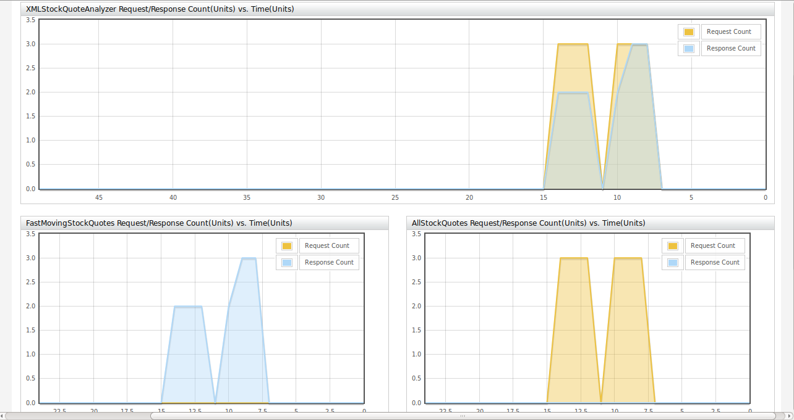
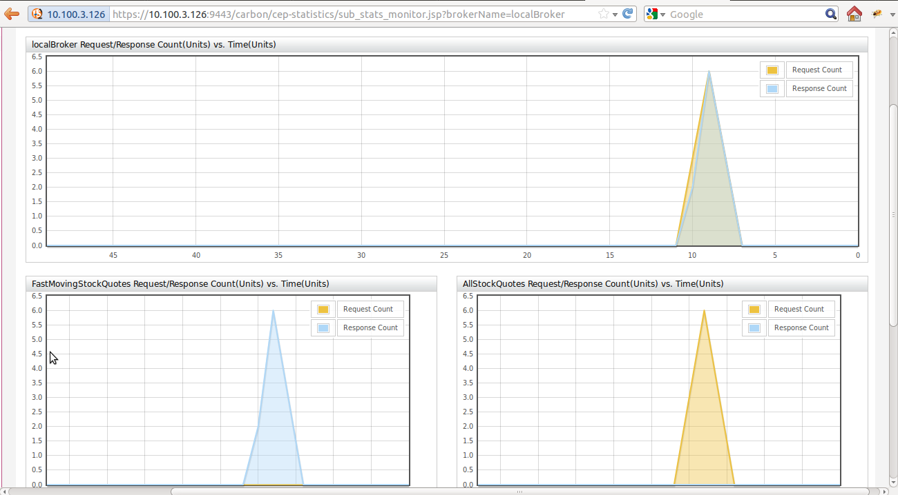

After you clicking "CEP Server Statistics" it will direct you to the Monitoring page and start monitoring. This gives real time request and responses for all the Topics incoming and outgoing CEP.
Once you click on the "Bucket Statistics" you will see deployed buckets with link to monitor. After clicking monitor link you will be redirect to the bucket monitoring statistics page as below. This will shows real time statistics for bucket with all the inputs events and output events processed though bucket from all brokers

Once you click on "Broker Statistics" link you will be redirect to the available broker and there you can see monitor link to monitor real time the broker statistics as below.
